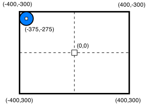

The goal of this lesson is to guide the user through adding a custom component to move a simple shape around the screen.
These lessons are structured in a series of steps -- small milestones that will provide focused short-term goals for incrementally understanding PushButton Engine.
These lessons are targeted at someone who is new to PBEngine, but not necessarily new to programming.
To follow along with the tutorial, you can download the starter project and use it as your base to implement the tutorial:
As covered in Lesson 1, import the example .pbepkg into a personal project folder, and ensure that it builds in your build environment.
The built .swf of the base starter project should display a blue circle in the upper left corner of the screen.

One of the strengths of PushButton Engine lies in the flexible way that components add functionality to a game. In this tutorial, we will make a relatively simple movement component. Later tutorials will deal with user input and handling collisions, but this lesson will keep things relatively basic.
The starter project for this lesson is very close to the previous lesson, except that the ball now spawns in the upper left corner of the screen. The location for the ball is (-375,-275). The reason for the odd number is to place the ball at half of its radius (25) from the edge of the screen, to be perfectly in the corner. You can refer to the diagram for an overview of this example's screen coordinates.
To build a component, one must create a class for it. Create a new source file in the project Source directory with the name DemoControllerComponent.as.
Components that inherit from TickedComponent get their OnTick() method called 30 times per second. This makes it a logical place to put movement logic. The tick event is used like a drum beat that keeps each component stepping in time with each other at the same pace.
Our component will use the tick event to move its parent entity to the right or the left. We will also use that event to check to make sure we're not at an edge boundary, and if we are, we will point ourselves in the other direction.
This component will make an entity move in a zig-zag fashion down the screen, similar to an Invaders enemy.
Use the following code listing in the file:
File: /Lesson3Base/Source/DemoControllerComponent.as
package
{
import PBLabs.Engine.Components.TickedComponent;
import PBLabs.Engine.Entity.PropertyReference;
import flash.geom.Point;
// Make a ticked component so that it can update itself every frame with OnTick()
public class DemoControllerComponent extends TickedComponent
{
// Keep a property reference to our entity's position.
public var PositionReference:PropertyReference;
// Store the direction that our entity is traveling: 1 is to the right, -1 is to the left.
private var direction:int = 1;
// OnTick() is called every frame
public override function OnTick(tickRate:Number):void
{
// Copy the owner entity's position into a local Point structure
var position:Point = Owner.GetProperty(PositionReference);
// If we are over the left edge...
if (position.x < -375) {
// ...then push ourselves to the right for the time being.
direction = 1;
// Move our entity down a notch
position.y += 20;
}
// If we are over the right edge...
else if (position.x > 375) {
// ...then push ourselves to the left for the time being.
direction = -1;
// Move our entity down a notch
position.y += 20;
}
// Move 5 units in the direction that we're headed
position.x += direction * 5;
// Set the spatial component's position based on our new value
Owner.SetProperty(PositionReference, position);
}
}
}
Now that we've created our component, it's time to add it into our game! We will add this component to our Hero entity in the same way that we added the other components in Lesson 2.
At the bottom of CreateHero(), after the last call to Hero.AddComponent(), add the following lines:
File: /Lesson3Base/Source/Lesson3Base.as
var Controller:DemoControllerComponent = new DemoControllerComponent();
// Point the controller component to this entity's Spatial component for position information
Controller.PositionReference = new PropertyReference("@Spatial.Position");
// Add the demo controller component to the Hero entity with the name "Controller"
Hero.AddComponent( Controller, "Controller" );
This creates an instance of the new DemoControllerComponent(), connects the position reference to the entity's spatial component, and adds the component to the entity.
And that's it! Only thing left now is to compile and run.
After compilation, you should produce a .swf like the following (click to load):
As in the previous example, a basic scene is being set up. Our Hero component has three components -- a render component, a spatial component, and a controller component (the DemoControllerComponent).
30 times each second, the OnTick() method of the controller component is called. This method handles the housekeeping for moving the parent entity. It looks at the position of the parent entity (gotten from the spatial component), and then applies some rules to create some simple movement behavior:
Congratulations! You have finished lesson #3, made your first custom component, and seen it in action.
You can download the completed project source files for this project.